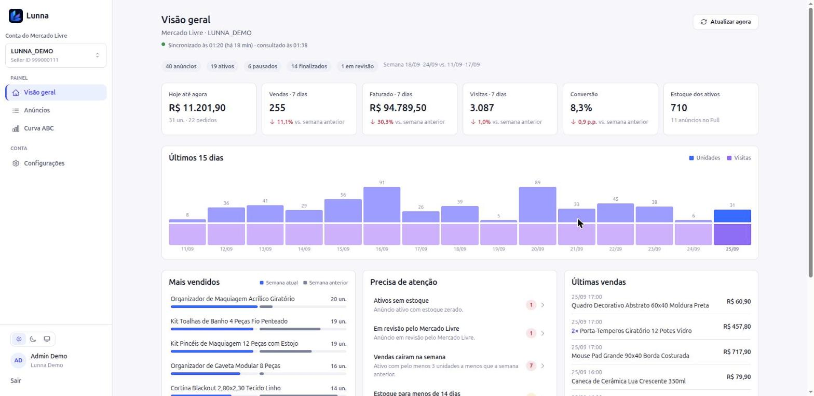

Como criar funcionalidades novas no Lunna com segurança
Para quem conhece o Mercado Livre e vai trabalhar com o Claude Code
Versão 0.1 · 25 de setembro de 2026docs/superpowers/specs/2026-09-25-kit-desenvolvimento-lunna-design.md). Os scripts e as skills estão em implementação; assim que ficarem prontos, o guia é atualizado com a saída real de cada comando. Se algum comando ainda não existir, avise o dono do projeto.Você entende do Mercado Livre: o que um vendedor precisa enxergar, que número importa, o que é um sinal de problema. O Claude Code escreve o código. O papel de cada um:
| Você | O Claude (com as skills do kit) |
|---|---|
| Diz o que quer ver e por quê, em termos de ML. | Traduz isso em código de back e de front, seguindo o padrão do projeto. |
| Dá um exemplo com números do resultado esperado. | Transforma o exemplo em teste automático antes de programar. |
| Olha os prints e confirma que a tela é o que você imaginou. | Roda a verificação, tira os prints e monta o texto do PR. |
| Abre o PR e anexa os prints. | Explica cada passo e avisa quando algo foge das regras. |
Quem revisa e publica é o dono do projeto (Vinni). Você nunca publica nada em produção: seu trabalho termina no PR aberto.
docs/SPEC.md). Ele não deve inventar campos.São oito regras. O Claude as conhece e as confere, mas é bom você saber por que existem.
| # | Regra | Por quê |
|---|---|---|
| 1 | O Lunna só lê o Mercado Livre. | Nenhuma função altera preço, estoque ou anúncio do vendedor. Um erro aqui mexeria na loja de um cliente de verdade. O único envio ao ML é o pedido de token de acesso. |
| 2 | Tudo é separado por empresa. | O Lunna atende várias empresas. Uma empresa jamais pode ver dados de outra; um anúncio de outra empresa deve dar “não encontrado”. |
| 3 | Cálculo e regra ficam no back; o front só mostra. | Assim o número é o mesmo em qualquer tela e pode ser testado. |
| 4 | Parâmetros de negócio são da empresa (imposto, margem mínima, cortes da Curva ABC). | Cada empresa tem os seus valores; nada fixo no código. |
| 5 | Segredos nunca aparecem em código, log, print ou PR. | Chave do app do ML, tokens e chave da OpenRouter dão acesso às contas dos clientes. |
| 6 | Não inventar campos da API do ML. | Um campo que não existe quebra a sincronização. Para usar um dado novo, é preciso um exemplo de resposta real do ML. |
| 7 | Teste junto com o código, e verificação verde antes do PR. | É o que garante que a funcionalidade nova não quebrou as antigas. |
| 8 | Peça ao dono antes de mexer em cd/prod/, arquivos .env, docs/DECISOES.md, migrations que apagam dados, bibliotecas novas ou qualquer deploy. | São as partes que podem derrubar ou expor a produção. |
main ou um deploy. A barreira é a sua disciplina e a revisão do dono. Trabalhe sempre em uma branch feature/… e nunca na main.| Item | Para quê |
|---|---|
| Docker e Docker Compose | Roda o back, o banco e os testes sem instalar Ruby. |
| Node 22 (via nvm) | Roda o front e os testes dele. O Node 24 não serve para este projeto. |
| Git com acesso SSH ao Bitbucket | Baixar e enviar o código. |
| Google Chrome | Usado pelo script que tira os prints (nada é baixado). |
| Claude Code | Onde você conversa e onde as skills do kit funcionam. |
lunna-api (o dono passa o endereço) para ~/workspace/lunna/lunna-api.lunna-api e rode:./script/setup.shEle confere o que falta, baixa o
lunna-web (o front) ao lado, cria o arquivo de configuração e instala as dependências. No fim mostra uma lista com ✔ ou ✘. Se houver ✘, a própria mensagem diz o que fazer../script/dev-up.shQuando terminar, ele imprime os endereços e o login de demonstração:
demo@lunna.dev / lunna12345. Front em http://localhost:3101.lunna-api. Ele já vem configurado para enxergar também o front (lunna-web, ao lado); você não precisa abrir nada além disso.LUNNA_DEMO). Você não mexe em nenhuma loja real e nada do que fizer aí chega ao Mercado Livre. Por padrão o sincronizador automático fica desligado; para ligá-lo use ./script/dev-up.sh --com-jobs (a conta demo não tem token e vai registrar falhas de sincronização, é normal)../script/dev-up.sh./lunna-nova-funcionalidade e conte o que quer. Ele vai entrevistar você com a ficha da funcionalidade (seção 5) e criar a branch feature/<nome> nos dois projetos./lunna-verificar. Tudo precisa estar verde (seção 6). O Claude corrige o que falhar./lunna-prints, abra as imagens em evidencias/<branch>/prints/ e confirme que a tela é a que você imaginou (seção 7)./lunna-pr. Ele gera o PR.md e imprime o link para abrir o PR de cada projeto alterado (seção 8).git push da sua branch). Depois abra o link, cole o texto do PR.md e arraste os prints.É o documento que transforma o seu conhecimento de ML em algo que o Claude consegue programar e testar. A skill preenche com você, em conversa. O modelo fica em docs/modelos/ficha-funcionalidade.md.
1. O que quero ver
Um novo alerta em "Precisa de atenção" (Visão geral) chamado
"Preço acima da referência do ML", com a contagem de anúncios.
Ao clicar, a tabela de Anúncios abre filtrada por ele.
Por quê: anúncio mais caro que a referência tende a perder conversão;
quero saber quais rever primeiro.
2. De onde vem o dado
Referência de preço do ML, já sincronizada a cada 12 h
(campo "status": with_benchmark_highest / with_benchmark_high).
3. Como calcular (exemplo)
Entra no alerta: anúncio ATIVO cujo status da referência é
with_benchmark_highest ou with_benchmark_high.
- Anúncio A: ativo, R$ 120, referência R$ 100, status
with_benchmark_high -> ENTRA
- Anúncio B: ativo, R$ 95, referência R$ 100, status no_benchmark_ok
-> NÃO entra
- Anúncio C: PAUSADO, R$ 130, status with_benchmark_highest
-> NÃO entra (só ativos)
4. Quem vê: administradores e membros.
5. Critério de aceite
- Com A, B e C, o alerta mostra "1".
- Clicar no alerta filtra a tabela e mostra só o anúncio A.
- Sem nenhum anúncio na regra, o alerta não aparece.
6. O que não muda: os outros sete alertas e a ordem em que aparecem.
O comando ./script/verificar.sh tudo (ou /lunna-verificar) roda, de uma vez, o que o dono usaria para aprovar:
| Parte | O que confere |
|---|---|
| Testes do back | Toda a suíte automática (RSpec). Nenhum teste fala com o Mercado Livre de verdade. |
| Estilo do back | Padrão de escrita do código Ruby (RuboCop). |
| Segurança do back | Brakeman (falhas comuns de segurança) e bundler-audit (bibliotecas com problema conhecido). |
| Testes do front | Vitest. |
| Tipos e estilo do front | Typecheck e ESLint. |
O resultado sai como uma lista curta:
API testes ✔ 413 exemplos, 0 falhas API estilo ✔ API segurança ✔ WEB testes ✔ 236 testes WEB tipos/estilo ✔ Log completo: evidencias/feature-meu-alerta/verificacao-2026-09-25.txt
/lunna-verificar e o Claude mostra o que quebrou em português e corrige. O log completo fica no arquivo indicado (o dono pode pedir para ver).Em toda mudança visual (tela, coluna, alerta, cor, texto) o PR precisa de prints. Sem print, o dono não consegue aprovar sem rodar tudo na máquina dele. Mudança que não aparece na tela (cálculo interno, correção invisível) não precisa.
/lunna-prints (ou ./script/prints.sh). O script confere se a porta é realmente do Lunna, monta a versão de produção do front, entra com o login demo e fotografa as telas.evidencias/<branch>/prints/ e olhe cada imagem. Confira se aparece o que você pediu, se o texto está em português correto e se nenhum dado real ou secreto aparece.| Arquivo | Significado |
|---|---|
01-visao-geral-claro.png | Tela no computador, tema claro. |
02-visao-geral-escuro.png | A mesma tela, tema escuro. |
03-visao-geral-mobile.png | A mesma tela em celular (360 px). |
Toda tela nova precisa aparecer nos três formatos. O roteiro básico já cobre login, Visão geral, Anúncios, Curva ABC e Configurações; a sua funcionalidade entra no roteiro da própria branch.

O Bitbucket não recebe imagens por script, então o anexo é manual: na página do PR, arraste os arquivos (ou cole com Ctrl+V) na descrição ou em um comentário. Anexe todos e coloque uma legenda curta em cada um (“Alerta novo, tema claro”). O texto do PR gerado já lista os prints na ordem certa.
PR (pull request) é o pedido para o dono revisar e juntar o seu trabalho ao projeto. Se a funcionalidade mexeu no back e no front, são dois PRs, um em cada projeto.
/lunna-pr. Ele cria evidencias/<branch>/PR.md e imprime um link de PR para cada projeto alterado.PR.md. Se o seu Bitbucket oferecer “rascunho”, marque; senão comece o título com [WIP] até anexar os prints.[WIP].lunna-api)| Comando | Quando usar | O que faz |
|---|---|---|
./script/setup.sh | Uma vez, na máquina nova | Confere pré-requisitos, baixa o front (lunna-web) ao lado, prepara configuração e dependências. |
./script/dev-up.sh | Ao começar o dia | Sobe banco, back e front com dados de demonstração; imprime endereços e login. --com-jobs liga também o sincronizador. |
./script/dev-down.sh | Ao terminar | Desliga tudo. |
./script/nova-branch.sh nome | Ao iniciar uma funcionalidade | Cria feature/nome nos dois projetos a partir da main atualizada. Recusa se houver alteração pendente. |
./script/verificar.sh [api|web|tudo] | Antes de qualquer PR | Testes, estilo e segurança; resumo em português e log em evidencias/. |
./script/prints.sh | Mudança visual | Tira os prints numerados (claro, escuro, celular). |
./script/pr.sh | Ao fechar a funcionalidade | Gera o PR.md e imprime os links de PR. |
./script/testar-kit.sh | Se um script se comportar de forma estranha | Testa o próprio kit e confere se os caminhos citados nos guias existem. |
| Skill | Use quando… |
|---|---|
/lunna-nova-funcionalidade | Quiser uma tela, alerta, métrica ou coluna nova. Conduz o fluxo inteiro. |
/lunna-api-mercado-livre | Tiver dúvida sobre qual dado ou endpoint do ML existe, ou quiser propor um novo. |
/lunna-verificar | For abrir um PR ou quiser saber se “está tudo certo”. |
/lunna-prints | A mudança for visual. |
/lunna-pr | For abrir o PR. |
/lunna-corrigir-bug | Algo estiver errado ou quebrado. Ele reproduz com um teste, corrige a causa e verifica. |
| O que aparece | O que fazer |
|---|---|
| “Porta 3100 ou 3101 ocupada por outro projeto” | O script mostra quem está usando. Encerre esse outro projeto e tente de novo. Não force nem reaproveite: já aconteceu de a tela mostrar uma versão errada por isso. |
| Erro do Docker falando de rede ou de espaço | Não apague redes ou imagens de outros projetos. Chame o dono. |
| ✘ na verificação | Digite /lunna-verificar. Se depois de duas tentativas continuar falhando, chame o dono com o arquivo de log. |
| Print com tela em branco ou diferente do esperado | Rode ./script/dev-up.sh de novo e gere os prints outra vez. Se persistir, mande o print ao dono. |
| O Claude quer mexer em algo da lista “fica com o dono” (seção 11) | Pare. Diga “não faça isso” e chame o dono. |
| O ML devolve erro 403 ou 404 em algum dado novo | Provavelmente falta permissão no app do ML ou o campo não existe. Não tente contornar; avise o dono com o nome do endpoint. |
| Não sabe se pode fazer algo | Na dúvida, pergunte ao dono antes. Perguntar custa uma mensagem; errar em produção custa a loja de um cliente. |
Estas tarefas não são suas, mesmo que o Claude ofereça fazer:
cd/prod/deploy.sh)..env, o arquivo de segredos do servidor, chaves de criptografia.cd/prod/ (manifests do servidor) e o arquivo docs/DECISOES.md (decisões fechadas do produto).main e o envio direto para ela.| Termo | Significado |
|---|---|
| Back / API | O programa (lunna-api) que fala com o Mercado Livre, guarda os dados e faz todos os cálculos. |
| Front | O programa (lunna-web) que desenha as telas que o usuário vê. |
| Branch | Uma cópia paralela do código onde você trabalha sem afetar a versão principal. |
main | A versão principal e oficial do código. Só o dono mexe. |
| PR (pull request) | O pedido de revisão para juntar a sua branch à main. |
| Seed demo | Dados fictícios carregados no ambiente de teste (conta LUNNA_DEMO). |
| Sincronização | O ciclo (a cada 5 minutos) em que o Lunna busca dados novos no Mercado Livre. |
| Teste automático | Um pequeno programa que confere se uma regra continua funcionando. O seu “exemplo com números” vira um. |
| Fixture | Uma resposta real do ML guardada como arquivo, usada nos testes para nunca chamar o ML de verdade. |
| Curva ABC | Classificação dos anúncios pelo faturamento dos últimos 30 dias (A concentra ~80%). |
| Verificação | O conjunto de testes, estilo e segurança que precisa estar verde antes de um PR. |
| Deploy | Publicar uma nova versão em produção. Fica com o dono. |